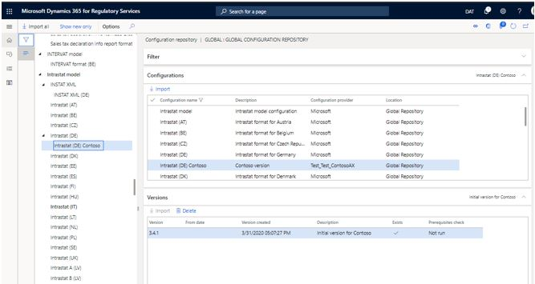
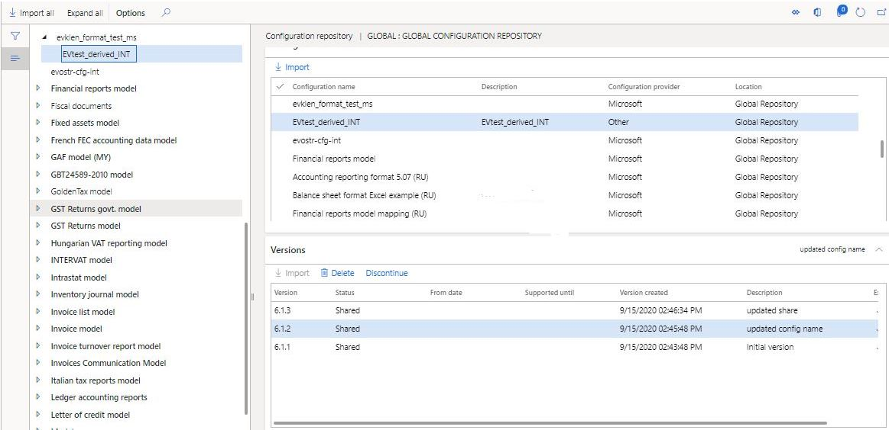
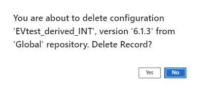

Create ER configurations in Regulatory Configuration Services (RCS) and upload them to the Global repository
You can use Microsoft Regulatory Configuration Services (RCS) to design Electronic reporting (ER) configurations and publish them so that they can be used in your organization.
The following procedures explain how a user in the System Administrator or Electronic Reporting Developer role can create a derived version of an ER configuration that has been configured in an RCS instance, and then upload the derived configuration to the Global repository.
Before you can complete those procedures, you must complete the following prerequisites:
- Access an RCS instance.
- Create an active configuration provider. For more information, see Create configuration providers and mark them as active.
You must also make sure that an RCS environment is provisioned for your company.
- In a Finance and Operations app, go to Organization administration > Workspaces > Electronic reporting.
- If no RCS environment is provisioned for your company, select Regulatory services – Configuration external, and then follow the instructions to provision one.
If an RCS environment has been already provisioned for your company, use the page URL to access it by selecting the sign-in option.
Create a derived version of a configuration in RCS
- In the Electronic reporting workspace, verify that you have an active configuration provider for your organization.
- Select Reporting configurations.
- Select the configuration that you want to derive a new version from. You can use the filter field above the tree to narrow your search.
- Select Create configuration > Derive from Name.
- Enter a name and description, and then select Create configuration to create a new derived version.
- Select the newly derived configuration, add a description of the version, and then select OK. The status of the configuration to is changed to Completed.

Note
When the configuration status is changed, you might receive a validation error message that is related to the connected applications. To turn off the validation, on the Action Pane on the Configurations tab, select User parameters, and then set the Skip validation at configuration's status change and rebase option to Yes
Upload a configuration to the Global repository
To share a new or derived configuration with your organization, you can upload it to the Global repository.
Select the completed version of the configuration, and then select Upload into repository.
Select the Global (Microsoft) option, and then select Upload.

In the confirmation message box, select Yes.
Update the description of the version as required, and then select OK.
The status of the configuration is updated to Share, and the configuration is uploaded to the Global repository. From there, you can work with it in the following ways:
Import it into your Dynamics 365 instance. For more information, see (ER) Import configurations from RCS.
Share it with a third party or an external organization, see RCS Share Electronic reporting (ER) configurations with external organizations

Delete a configuration from the Global repository
Complete the following steps to delete a configuration that your organization has created.
In the Electronic reporting workspace, verify that your configuration provider is Active. For more information, see Create configuration providers and mark them as active.
On your active configuration provider, select repository.
Select the repository type Global, and select Open.
On the Filter FastTab, find the configuration that you want to delete by using the Filter functionality.
On the Version FastTab, select the version of the configuration that you want to delete, and then select Delete:

In the confirmation message box, select Yes.

The configuration version is deleted, and confirmation message is shown.
Note
Configurations can only be deleted by the Configuration provider that created them. If the configuration has been shared with another organization, the configuration will need to be unshared before you delete it.